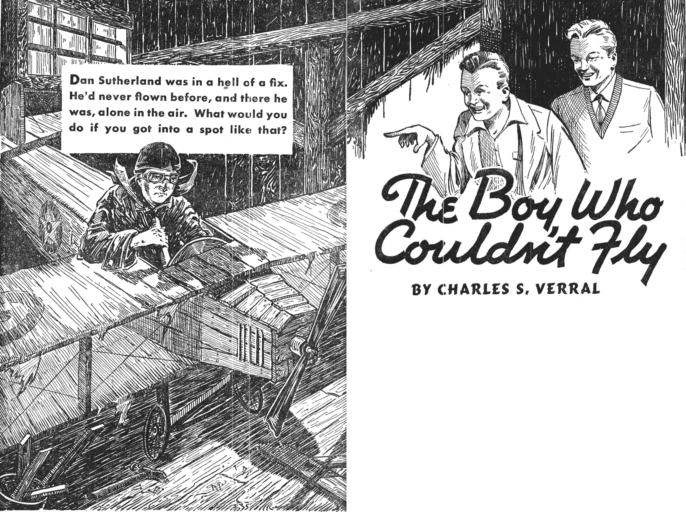

“She’s a Ross Comet, Murph!” Dan Sutherland said. “Look at that wing dihedral and that split undercarriage.”
They stood at the top of Frazer’s Hill and watched the red monoplane go swooping over the town of Newton in the valley below. The April afternoon sun was strong and Dan shaded his face. His blue eyes sharpened with excitement.
Murph glanced uneasily at the intent face. “They all look alike to me,” he said, shortly. “Come on, Dan. I’ve got a tennis date.”
But Dan stayed where he was.
Murph tried again. “Ah, let’s go. That crate’s beating it.”
The red plane wasn’t. It had flown the length of the town and was now coming back, skimming low over Main Street. Dan caught his breath as the Comet roared over the white bank building, barely fifty feet above its roof.
“I’ll bet your Dad’s loving that,” Murph said.
Dan was thinking the same thing. He could visualize the effect the low flying was probably having on his father, the president of the bank. His dad had no sympathy with aviation. It was the one thing Dan could never understand about him.
“You fly?” his father had said the one time Dan spoke of it. There had been something like horror in his voice. “No! That’s unthinkable, Daniel!”
His father hadn’t said why, but his eyes had dropped to Dan’s crippled right leg encased in its steel brace. And to Dan that glance had been full of meaning.
He’d wanted to cry out, “You don’t understand, Dad. That’s the very reason I want to fly. I haven’t any freedom on the ground. People feel sorry for me. In a plane it’d be different. I’d be free as the wind.”
But, Dan had said nothing. And from then on he’d kept his increasing interest in flying hidden from his father.
He knew he could never be a transport pilot. All he’d wanted was to hold an amateur license. And after that to enter aviation in some ground capacity where his crippled leg wouldn’t be a handicap.
Dan had worn a brace on that leg as far back as he could remember. His father had told him he’d been hurt in an accident when he was very small, an accident that had killed his mother. But his dad wouldn’t talk about it and no one in town volunteered information. The accident had occurred before the Sutherlands had come to Newton.
And now, as Dan gazed at the sleek monoplane scooting past the bank building he thought bitterly. In two years he’d graduate from senior high and then take the position in the bank that his dad had arranged for. All his life would be spent in that white building. There’d be no red monoplane for him—ever.
Murph’s voice cut in, “Come on, come on,” he said, gruffly.
“What’s biting you, Murph?” Dan asked, his eyes never leaving the plane. “Look at that, will you!”
The Comet had suddenly zoomed and was now racing up, the sun polishing its wings to glistening vermilion. The roar of its engine became a whine. Dan judged it had reached six thousand feet when the ship leveled, humped over and dived. The wings flipped around slowly ... once, twice. Now faster.
“Holy smoke!” Dan said. “A spin. Murph! A spin! He’s aiming right at the school!”
The Ross Comet came plummeting down, wings whipping. Dan’s long face whitened. Maybe the pilot wasn’t stunting. The ship had already dropped two thousand feet without straightening. Maybe the pilot had lost control!
Color welled over Dan’s high cheek bones. “Get her out of it!” He wasn’t conscious that he was shouting. “Jam the stick forward! Give her opposite rudder and aileron. Hurry!”
As if the pilot had heard his words, the Comet’s wings straightened. The machine bulleted down in a power dive. Then, the nose came up. The ship flattened and, with a bellow, careened away.
Dan blew out his breath. The guy was a swell pilot.
“Whew!” Murph gasped.
The monoplane streaked across the residential section, climbing. Dan saw it circle over the grounds of the Blackwell house.
“Maybe he’s a friend of Jerry’s,” Dan said. Jerry Blackwell had been away to flying school the previous summer and had come back flaunting an amateur license.
“Naw,” Murph said. “Jerry hasn’t got a friend.”
But, Dan thought, Jerry had plenty of friends even though he wasn’t one of them. Jerry was the school’s star athlete; he owned a fast roadster; he had lots of money and.... A sudden thought flared across Dan’s mind. Jerry had boasted that his dad was going to buy him a plane....
Dan turned to Murph. “Could that be Jerry’s plane?”
Murph’s full-moon face flushed. “Well—yeah, that’s right, Dan,” he said.
“You knew it all the time?”
“I guess I did,” Murph said miserably. “Jerry was spreading the word around after school that a Ross pilot was flying his crate down. Jerry had him primed to put on that stunt, looks like.”
Dan said, “Oh,” and turned away. “You could’ve told me, Murph.”
“I didn’t because....” Murph stumbled. “Ah, you know.”
Dan shoved back a shock of blond hair that had fallen over his face. Distantly he realized that the Comet was now flying across the valley in the direction of the airport.
“It’s going to land,” Dan said. “I’m going over.”
“Aw, nuts,” Murph said. “Don’t do that. You and Jerry....” He left the sentence hanging.
Dan said, “I’ve got nothing against Jerry. And I want to see that plane.”
Murph scowled. “You got nothing against that guy? How about your smashed model?”
Yes, how about it, Dan thought. That had been his first serious run-in with Jerry. There’d been others since. But that first time ... It’d happened last summer at a local gas model meet. Dan had worked hard on his plane, had turned out a good job. On its first timed run it had flown far across the airport, landing in tall grass. Jerry Blackwell had gone in pursuit of the model in his yellow roadster. When he’d come back, he’d brought the smashed wreckage of the ship with him. He’d said that he’d found it cracked up. It’d been Murph who’d put the first doubt in Dan’s mind. He’d pointed out the buckled fuselage and said, “Jerry never found her like that.”
But there’d been no proof. And when Jerry’s model had won the meet, his father had been so proud he’d given him a flying course. And now—a Ross Comet.
No, Dan hadn’t forgotten. But he turned to Murph and said, “Maybe it was an accident.”
“Nuts,” Murph said. “Well, if you haven’t anything against Jerry, he sure doesn’t love you.”
“Why?” Dan asked. The question had bothered him for months.
“For one thing you’re too smart for him up here,” Murph said, tapping his head. “I know you don’t mean it but you’re always showing him up. Not just in aviation but in everything. A grandstander like Jerry can’t take it. And....”
“What?”
“Oh, nothing,” Murph said. “But I wouldn’t go down there, Dan. Please.”
Dan stood with his legs spread far apart. He thrust his hands deep in the side pockets of his tan corduroy slacks. Then he said, “I’m not afraid of Jerry. And I want to see that plane. I’m going to the airport.”
Ten minutes later, Dan was far down the narrow road, out of earshot, of Murph’s protests. Dull anger had now replaced the thrill the first sight of the Comet had brought. That was envy, wasn’t it? Envy for Jerry, for his amateur license, for his new plane. But Jerry really didn’t care about aviation, Dan thought. He just saw it as another way to grandstand. While he....
The road, which curved through the rolling country like a care-free brook, was muddy from a recent rain. Water stood in shimmering pools, reflecting the blue and cream of sky and clouds. The air was heavy with the full sweetness of April.
But Dan didn’t notice as he hurried awkwardly on. He didn’t see the gently flowing farmland lying in reddish brown molds from the steel of the plow. He didn’t recognize the cheerful hello of the meadow lark. Nor did he hear the car until its horn blasted out from behind.
Startled, he lurched to the side. The long yellow shape of a powerful roadster swooshed past, doing sixty. It was Jerry Blackwell’s car. Jerry was at the wheel and Frenchy Morenz, his sidekick, was with him. The car hurtled on its way, without slowing, without stopping.
Jerry had seen him, all right. You’d think he’d stop and pick a guy up. But the roadster pelted over a rise in the road ahead and was gone.
Dan stopped, shifting his weight to his good leg. Maybe Murph was right. Maybe he was just sticking out his neck. Maybe ... But that was silly. Why should he miss seeing a Ross Comet close up? Jerry shouldn’t mind that.
By the time Dan reached the rise in the road, he was tired. Far ahead, down in the lowland, he saw the air field. Jerry’s car was there, empty and the Ross Comet was racing across the airport and angling into the sky.
The distant drone of its engine was drowned by a clanking of machinery from back on the road. Dan turned and saw an old Ford roadster. Gus Petersen’s famous chariot.
Gus brought the car to a halt beside Dan and threw open the door. “Airport?” he yelled.
Dan said, “Swell,” and climbed aboard, sinking gratefully on the patched cushion.
Gus shot him a lopsided grin. “Sweet crate Jerry’s got, huh?” he said as they got under way.
“I’ll say,” Dan answered.
“Jerry had the gang all waiting outside the school for the show. Some stunting.”
Dan nodded.
Gus ducked down to look through the windshield at the climbing Comet. “They’ll be back. The pilot’s showing Jerry how the ship handles ... Boy, the whole gang’s heading for here. This’ll start the club right.”
“The club?” Dan said.
Gus drew back and looked at Dan out of the corner of his eyes. “Yeah ... yeah....” he said hesitantly. “Jerry’s getting up a flying club ... I thought he’d asked you.”
“No,” Dan said. No, Jerry hadn’t asked him and probably wouldn’t. But now Dan knew why Murph had tried so hard to get him to go home. Murph must’ve known about the club.
Gus drove on in silence. After a while he said, “You should be in the club, Dan. You know more about flying than the rest of us. I’ll speak to Jerry. He just forgot.”
Dan said, “Skip it.”
“It’ll be a flock of fun, Dan,” Gus went on. “Jerry’s going to take us up and teach us to fly.”
“But he’s only got an amateur license!” Dan exclaimed.
“What’s wrong with that?”
“Amateur pilots must not carry persons or property for fees, nor instruct students,” Dan quoted. “Jerry hasn’t had enough experience. It’d be dangerous.”
Gus looked disturbed. “I didn’t know that. Saaay.”
The Comet was far over town when the Ford came to a stop beside Jerry’s roadster at the edge of the flying field. And in a matter of minutes the rest of the high school gang showed up. They came on motorcycles and in old cars, the battered jalopies making marked contrast with the sleek perfection of the yellow roadster.
Dan liked all the gang. He found himself caught up in their enthusiasm and for awhile he forgot Jerry.
But now the Comet was coming back. Dan stood with the others and waited while the red ship circled the field and came in for a rough landing. The plane touched her wheels, porpoised, touched again, bounced and finally settled.
“Jerry’s at the controls,” Dan said.
Hank Smith beside him said, “How do you know?”
Dan started to say, “That was a rookie landing.” But he caught himself in time and said, “Just a guess.”
Jerry was at the controls. Dan saw that as soon as the Comet taxied over. The right cabin door opened and Frenchy and a florid-faced man stepped out. That’d be the Ross pilot.
But Jerry remained in the pilot’s seat as the gang of boys crowded around. Dan went with them, staying to the outside.
Although the Comet was a cabin job, Jerry was wearing a white leather helmet. Amber-tinted goggles were over his eyes. His expression was of bored weariness as if he’d just brought the mail in for the thirty-second time. With a slow gesture, he swept the goggles back.
Dan saw that the act wasn’t lost on the gang.
Then, Jerry looked up. His face brightened as if, for the first time, he’d seen his friends. He said in an unnatural husky voice, “Oh, hello, fellows.”
He stepped from the cabin and leaned against the fuselage, his broad shoulders slouched. He was handsome, in a beefy way, dark-complexioned with heavy black eyebrows, a powerful physique. He said, “Fellows, I want you to meet Ace—Ace Cooper.”
The Ross pilot shook his clutched hands above his head. “Hi, gang,” he said.
Jerry went on. “Ace, this is Gus.” He pointed to Gus Petersen. “This is Hank ... and Tom....” He went around the half circle. When he reached Dan, his eyes stopped momentarily and then swept on. He didn’t say, “This is Dan.”
Dan moved away, embarrassed and angry. But he hadn’t come to meet the pilot. He just wanted to see the plane.
He walked slowly around the Comet, taking it all in from spinner cap to the trailing edge of the balanced rudder. He touched the taut fabric almost with reverence. The ship was a honey.
Later, when the gang had broken up and Dan, in his detachment, had lost track of time, he heard Gus Petersen’s voice. He had taken Jerry aside and was talking to him. Dan caught his breath. Surely Gus wasn’t.... But he was. Dan heard enough of his low-pitched words.
Then came Jerry’s reply, loud and clear. “Join the club? No! That cripple can’t fly!”
Dan stepped back, his ears ringing. Then, he turned abruptly and went past the suddenly hushed boys, almost without seeing them. He heard Frenchy snicker. He stumbled as he reached the road for his eyes were hot. He didn’t look back as he headed for home.
“That cripple can’t fly!” But Jerry didn’t realize. Jerry didn’t know. He could fly. He’d “flown” the Night Hawk for hours and hours.
And he’d “fly” her again as soon as he could get to her hangar.
Half an hour later, Dan was hurrying down the driveway of his home. He went past the rambling brick house to the yard beyond. Belle, the colored cook, was at work at the kitchen window. She called out, “Aftahnoon, Mistah Daniel.” But Dan needed more than Belle’s smiling black face. He reached the barn and went inside. He passed the old cutter, thick with dust and cobwebs. He gripped a rung of the ladder which led to the hay loft and clumsily pulled himself up. Near the top, just under the trap door, was the sign he’d crudely lettered years ago:
PRIVATE—THIS MEANS YOU.
He pushed open the trap door and scrambled through. He hadn’t been up in the loft for a long time—the place where he’d spent most of his days as a kid.
He stood there beside the open trap door. He looked across the loft with its peaked roof and rough gray beams. In the sunlight streaming through the small window he saw the Night Hawk, dusty and forsaken.
Its wing was sagging. The covering had fallen away from the left elevator. Cobwebs clung to the fuselage.
Could this misshapen thing be the splendid Night Hawk? Could this be the ship he’d so proudly built with his own two hands out of scrap lumber and odds and ends?
Then, into his mind came a picture of Jerry’s Comet, trim of line, powerful and sure. And Dan saw the Night Hawk as she actually was, a crude, dilapidated plaything.
He leaned back against the wall. There, before him was the ship he’d hurried home to fly.
It had been built five years ago, fashioned with enthusiasm, before he’d attained carpentry skill. Its high wing held extraordinary curves. The framework of the fuselage was covered with strips torn from bed sheets. The undercarriage owed its existence to the remains of a tricycle.
Yet, the Night Hawk had ailerons and elevators that worked when the stick in the cockpit was moved. A rudder that wagged when the pedals were shifted. It had an under-sized propeller with blades cut from sheets of tin and attached to an old electric fan—a propeller that revolved when a switch in the cockpit was snapped.
Dan had spent hours in that cockpit, sitting on a cut-down kitchen chair, with his hand on the control stick and his feet jammed against the rudder pedals. The instrument board was packed with round pieces of cardboard, each in its proper place, each pencilled to represent the dial of a particular instrument. The altimeter ... R.P.M. ... Oil pressure ... Airspeed indicator ... and the rest. The throttle was there. The switches.
The Night Hawk had started as a toy and become much more. Dan had studied every available book he could get on flying—books on meteorology, on the theory of flight, on navigation and aerobatics. And sitting in the Night Hawk, with the cardboard discs becoming real instruments, with the controls working and the tin propeller swishing over, Dan had put himself through a strenuous series of flying lessons—translating the printed word into the movement of rudder and aileron and the flickering of instrument needles—drilling himself patiently until he knew every maneuver, every reaction.
That had been years ago. As he’d grown older he’d felt self-conscious about the crude machine. He’d transferred his books to his room and continued his secret studies there—secret because of his father’s disapproval of aviation.
And as Dan stood alone in the quiet of the loft, with his gaze still on the Night Hawk, he remembered those long-ago flights—and he remembered Jerry’s stinging words.
But now—now the crude ship was dissolving before his eyes. And in its place the real Night Hawk was forming. A Night Hawk sheathed in shining dural; her high wing wide and firm; her fuselage streamlined. She was straight and true and splendid—the splendid ship she’d always been. The ship that had carried him through fog and storms, across oceans and deserts. The Night Hawk was there—waiting for him.
Dan took a step forward. His eyes were bright. And, barely conscious of what he was doing, he reverted to the old game he used to play. It wasn’t hard to go back. It wasn’t kiddish. It was real and fine.
He said, “Hey, Sam. Run the Night Hawk out. I’m taking off.”
He went to a box nailed to the wall, took an old flying helmet from it, shook off the dust and put it on his head. Goggles were slipped over his eyes. He hurried toward the Night Hawk.
“A bad night you say, Sam? ... That fog won’t worry me. I’ve got to get the mail through.”
He stepped into the cockpit and sat down on the chair. He fastened the safety belt around his middle. He gripped the stick with his right hand and inserted his feet on the rudder pedals. Carefully now, he ran his eyes over the instrument panel, checking everything, moving the controls. The ailerons and elevators and rudder moved stiffly, their rusted hinges protesting.
Dan pushed the inertia starter. The hum of the electric fan sounded. The tin propeller blades turned over slowly, shakily. He worked the throttle, listening to the roar of the motor that had now become a powerful radial.
Then, he stuck his head over the cowling and yelled, “Be seein’ yuh, Sam.” He threw off the brakes.
It was night. The runway which headed into the wind was illuminated. Dan guided the Night Hawk to it and threw the throttle wide.
The Night Hawk thundered down the concrete strip, past the blurred rows of red and green lights. The tail came up. The airspeed needle stood at seventy. Dan eased back on the stick and the Night Hawk arrowed up into the darkness.
At three thousand feet he leveled off. He was flying now. In his imagination ... yes. But flying. Look, down there ... those lights ... a town ... Newton ... the main street ... the movie theater ... the neon sign in front of Joe’s Barbecue.
And Jerry had said, “... can’t fly.”
But Jerry hadn’t known about the Night Hawk—the Night Hawk that could fly as well as the Comet. It had been in tight spins just as the Ross ship had that afternoon and come out of them.
And, still in the powerful grip of his imagination, Dan pulled the Night Hawk up, up on her nose until she stalled, until she fell off on one wing and plummeted earthward. Then, he kicked the rudder, threw the stick over and forced his ship into a spin.
The Night Hawk shrieked down, wings whirling. Dan rode the cockpit, feeling the dizziness of the spin. But he knew what to do. Use your head. Keep cool. Above all don’t let panic get you. Now, stick forward ... Full opposite rudder and aileron ... See, she’s coming out. She’s in a straight dive ... Now, neutralize the controls and pull the stick back.
The Night Hawk leveled and went screaming on her way. Dan leaned over the coaming and patted the side of the fuselage. “Nice going, Night Hawk,” he said.
Then, clear and unmistakable, he heard a human sound—a snicker. He looked up. And his imaginary world collapsed.
Standing near the trap door were Frenchy Morenz and—Jerry Blackwell!
Jerry said, “Nifty ship.”
Frenchy snickered.
Dan’s face whitened. He fumbled at the catch of his safety belt. He tried to speak and found his throat dry. How had they ever come up here? Belle must’ve told them where he was.
He said finally. “What do you want?”
Jerry swaggered over. A smirk was on his big face. He looked down at the Night Hawk. “Isn’t she a honey, Frenchy?” he said.
Frenchy was laughing. He peered into the cockpit. “Look, Jerry,” he said. “Look here. He’s even strapped in!”
Jerry roared with mirth. “You oughta be wearing a chute,” he said to Dan. “I’ll report you to the Department of Commerce.”
Dan sat where he was. His face had gone from white to brick red. “What do you want, Jerry?” he said again.
The laughter left Jerry’s face. He moved closer to Dan, stood over him, his broad shoulders squared. “I came to say something to you, wise guy,” he said. “I’ve heard what you said about me not having enough experience to give instruction. The fellows won’t go up with me now. You’ve wrecked my club.”
“I didn’t mean to break up the club,” Dan said. “It’s against the law for an amateur pilot to instruct. I just told Gus for his own safety....”
“And for your safety, you’d better keep your trap shut!” A gleam came into Jerry’s eyes as he looked at the Night Hawk. “I don’t think your word will mean much now.”
“I betcha he’d die of fright if he ever got his feet off the ground,” Frenchy said.
Jerry was glaring at Dan. “I’ve taken enough of your lip. You’ve tried to show me up once too often ... You stay here and play with your toys, and leave real flying to me ... Come on, Frenchy.”
Jerry turned and went down through the trap door. Frenchy followed.
Dan stayed where he was. He heard the two boys leave the barn.
No one had ever known about the Night Hawk ... not even Murph or Dan’s father. But now Jerry knew and Frenchy. What would they do?
Dan went to school the next morning prepared to face ridicule. He was sure that Jerry had spread the secret of the Night Hawk. He hoped that he could take it with a wisecrack and a grin. But nothing happened.
And as the morning wore on, Dan waited in suspense. He knew Jerry wouldn’t let such an opportunity pass. Something would happen.
And at noon, while Dan was in the cafeteria, something did.
It was the day the weekly school paper was issued—a single multigraphed sheet. Dan heard the burst of laughter even before he opened his paper. Then—he knew.
There, spread right across the page in big letters for everybody to see was:
EXTRA! EXTRA! DESPERATE DAN SUTHERLAND REVEALED AS FAMOUS HOT AIR ACE.
Underneath was: Newton’s Aeronautical Genius Unmasked.
Practically the whole sheet was given over to a reporter’s fanciful interview with Desperate Dan Sutherland. It told with cruel exaggeration about the Night Hawk. There was a cartoon of a ramshackled airplane with a caricature of Dan in the cockpit.
Dan tried to keep a grip on himself but he wanted to get up and run. The fellows were all shouting at him, calling him Desperate Dan. In an hour the name had swept the school.
Dan tried to grin, tried to wisecrack. But it was tough going. The afternoon seemed never-ending.
Murph walked home with Dan. “Some day I’m going to blacken Jerry’s eyes,” he said.
“I can take it, Murph,” Dan said. “Don’t worry.”
“You were swell,” Murph said. “They won’t keep it up if they think it’s rolling off your back.”
But they did keep it up—the next day and the next. Then, on the third day, the kidding suddenly dropped off.
Dan caught Jerry talking quietly to Frenchy and some of the gang. He wondered if they were up to something else.
After school as Dan came down the steps he saw Jerry sitting in his roadster. Jerry said, “Hi, Dan. How about a lift?”
Dan said, “Thanks. I think I’ll walk.”
“Aw, don’t be like that,” Jerry said. “I’m sorry about that kidding.”
Dan looked at him. “You are?”
“Sure,” Jerry said. “Come on. Hop in.”
Dan thought, “Jerry isn’t fooling me. He’s up to something. But I might as well bluff it through.” He got in the car.
Jerry put the roadster in gear and rolled it down the drive. “Let’s be friends, Dan,” he said. “I’m driving out to the airport. Want to come?”
Dan said, “Just drop me off at home.”
Jerry laughed. “Still afraid, huh?”
“I’ve never been afraid of you,” Dan said. “I’ll go.”
When they got to the air field Dan saw a bunch of cars. And Jerry’s gang was grouped around the Comet.
Jerry pulled the roadster to a stop and got out. “I’m taking Desperate Dan up for his first hop,” he said.
Dan started. “No, you’re not.”
Jerry spread his hands expressively. “See, gang. I told you he was yellow. He’s hot stuff in that toy ship but when it comes to the real thing....”
Frenchy said, “Yeah. Didn’t I say he was afraid to really fly,” and snickered.
It was that snicker that got Dan. He looked around at the crowd. The fellows were watching him, waiting for his answer.
Dan took a deep breath. “All right, Jerry,” he said quietly. “I’ll go.”
Jerry’s smirk widened. “Now you’re talking ... Okay, Frenchy, drag out the chutes. Put one on Desperate Dan.”
Dan had climbed from the car. “Chutes? What’d we need chutes for?”
Jerry looked amazed. “Don’t tell me that an expert like you doesn’t know that parachutes must be worn for acrobatic maneuvers,” he said and winked at the gang.
“You mean you’re going to stunt?” Dan said. “That’s dangerous. You haven’t had enough experience.” Right after the words left his lips Dan knew that it was exactly the wrong thing to say.
Jerry’s face darkened. “I’ll show you if I’ve had enough experience. Unless you’re scared and want to back out.”
Dan said, “I told you I’d go, didn’t I?”
But when he was climbing into the Comet’s upholstered cabin, Dan thought, “You’re a fool. Jerry’s going to grandstand before the gang and try to frighten the daylights out of me. He’s liable to crash.”
But it was too late to change his mind now. Jerry was in the pilot’s seat beside him.
Dan shifted the webbed chute harness that criss-crossed his body and tried to look composed. But he was far from that.
Jerry had worked the starter. The engine caught. The prop whirled. He jazzed the throttle, then eased it back. “Fasten your belt,” he said curtly. “You’ll need it.”
Dan obeyed. He felt the Comet vibrating under him. The drumming of the engine was in his ears. His uneasiness increased.
Jerry released the wheel brakes. As the ship moved forward, Dan saw a car turn in from the road and come to a fast stop. Two figures jumped from it and started running toward the plane. The first was Murph. And that tall man behind him was—Dan’s father!
Dan gasped. How had his dad ever come out here? Murph must’ve heard about Jerry’s scheme and told Dan’s father. And now they were trying to stop the take-off.
But there was no stopping. Jerry had seen them and didn’t wait. Instead, he rammed the throttle wide. The Comet lunged ahead.
Every muscle in Dan’s body was taut as the monoplane’s speed increased. He tried to relax, tried to reason with himself. He had to see this thing through now—no matter what Jerry did.
He saw the stick go forward. He felt the tail lift. The airspeed needle was crawling up. The sea of grass whipped past. Then, Jerry brought the stick slowly back.
There were no bumps. Just even sailing. Dan realized they’d taken off.
The Comet climbed slowly and gradually Dan began to feel better. He looked down and thrilled at the sight of the earth dropping away. He was actually flying. This was what he’d imagined it’d be.
Jerry held the Comet’s cowled nose high. The altimeter showed one thousand as the minutes passed. Two thousand. Three.
Jerry levelled off and looked at Dan. “How do you like it?” he asked. The soundproof packing around the firewall shut out the noise of the engine.
Dan grinned. “It’s swell,” he said and meant it.
Jerry’s eyes narrowed. “Well, get a load of this.”
He kicked the rudder, threw the stick and whipped the ship around in a steep bank. Dan felt himself thrown violently against his belt. Before he could catch his breath, the Comet dropped its nose and dived, engine howling.
Dan clutched at the edge of his seat. The monoplane was standing on her nose. The earth was rushing up.
Dan hung on tightly. The thrill he’d felt at the take-off was gone. He was afraid. Not afraid of flying but afraid of Jerry’s overconfidence. He’d try anything just to show off. He might try something that he couldn’t finish.
The Comet was plummeting for the airport. Dan saw the antlike figures down there. They grew larger by the second. One of them was his dad. What was he thinking? What would he do when they landed? If they landed....
Dan shot an agonized glance at Jerry. Had he already lost control?
Jerry looked back and laughed. He yelled, “We’re going to crash!”
Dan knew he was kidding, that he was just trying to frighten him. But unless he pulled out of the dive pretty soon they would crash.
And they almost did. Jerry held the plunging ship in its wild descent until it was within four hundred feet of the field. Then, he pulled the stick back. The Comet flattened out and raced on across the country.
Dan leaned back weakly. They’d come out of that okay. But would they be as lucky the next time? Jerry’s handling of the ship was clumsy. He wasn’t good enough to stunt.
Dan wanted to reason with him. But he knew that would only spur Jerry on.
The Comet zoomed again. Jerry shouted, “That’s just a taste of what you’re going to get, wise guy.”
Then, without warning, he kicked the ship over in a barrel roll.
Dan’s head was snapped back. He hung tightly to his safety belt. The plane whirled completely over once. It had started on another revolution before Jerry could check it.
He fought the controls. The Comet staggered, fell off ponderously on one wing, side slipped. Dan saw a trace of fear creep across Jerry’s face.
But again he was lucky. The ship’s nose fell. She dived and Jerry tugged her into level flight.
That’d be all, Dan thought. Jerry’s had enough.
But that wasn’t all. Jerry’s confidence had come back. He turned to Dan and laughed. “Now I’ll show you what a loop looks like,” he said.
A loop! Dan’s body went numb. He said impulsively, “Don’t try it, Jerry. You almost lost control in that roll. Don’t try a loop ... We’ve had enough. Let’s land.”
He wasn’t calling quits. He was using his head. For Jerry to try any more stunting was suicide.
But Jerry was forcing the Comet into a climb. He said. “I knew you were yellow. I’m not through with you yet.”
Dan didn’t say anything more. He looked down at the earth so far below. The countryside was a checkered map. There was the airport, the size of a postage stamp. He thought of his dad down there. His eyes would be upturned.
The monoplane was at six thousand feet now. Jerry said, “Get ready ... Here we go.”
The ship dived, dived until the wind was screaming. Dan dug his nails into the palms of his hands. He tried to close his eyes. He couldn’t.
The stick was coming back. The Comet was zooming up, up, her nose high to the blue heavens. Dan saw the horizon whip past, the sky flash away, the earth appear under his head.
They were upside down, at the top of the loop.
But the Comet didn’t complete the loop. She wallowed at the top, inverted. She lost flying speed. She seemed to hang for an indefinite space of time. Then, with a scream, she slipped off on her right wing.
She plunged heavily, crazily. Jerry clung to the stick, holding it back. In that awful moment Dan saw a spasm of fear sweep across Jerry’s face.
Then the wings whipped over—and the monoplane went into a tight spin!
The color drained from Dan’s cheeks. The earth was whirling like a top. Jerry had both hands on the stick. His face had gone gray. His eyes were wide.
The altimeter was dropping fast. The earth tore up.
Dan shouted, “Push the stick forward! Forward!”
But Jerry was past hearing. He was frantically tugging at the stick, working the rudder pedals. The ship held to its tight spin.
If Jerry didn’t get control, they’d crash. This was no kidding now.
Then, Dan saw Jerry’s hands leave the controls, snatch at the buckle of his safety belt. The belt parted. Jerry grabbed the handle of the left cabin door. He forced it open.
“Jump!” he yelled at Dan. “We’re goners! Jump!”
He didn’t wait to see if Dan heard. He dived through the open door.
And Dan was left alone.
Dan’s heart stopped. Jerry had jumped!
Quickly, Dan unfastened his belt, gripped the handle of the door beside him. His eyes whipped from the altimeter to the ground tearing up. No! He couldn’t jump. There wasn’t time. He’d never make it. He’d never get out of that door with his crooked leg.
But what would he do? The ship was now plummeting down at top speed. He fought to hold himself in the seat.
There was only one thing to do—and Dan did it.
He forced himself across to the empty pilot’s seat, tugged the belt around his stomach. His feet found the rudder pedals. His hands grabbed the control stick.
The altimeter! When he’d last seen it there’d been twelve thousand feet. Now it showed nine hundred!
He forced his panic back. You know how to fly. You’ve flown the Night Hawk. You’ve brought her out of spins. This is the Night Hawk!
The Night Hawk. Yes. That was it. He was in the barn loft. He was seated on that old kitchen chair. The instruments on the board ahead were cardboard discs. The propeller was made of tin.
Remember? Stick forward. Close the throttle. That’s right. Full opposite rudder. Gently.
Eight hundred feet ... seven ... Don’t look at the altimeter. Don’t look at the closeness of the whirling world down there. Don’t think of your dad watching. You’re going to crash unless you keep cool.
Dan forced himself to obey the commands of his mind. His hands and feet reacted. The noise of the engine had died but the screaming of the wind had increased. The spin was slowing. She was coming out. But was there time?
Look! The altimeter. Six hundred feet!
The Comet’s wings revolved again ... once more—then held steady.
Dan was out of the spin!
But he was still diving! Five hundred feet from the ground.
Use your head now. Seconds count. Pull the stick back slowly. Not too fast. A sharp movement might fold the wings.
The nose is coming up ... But you’re almost on the ground. Back some more.
Dan caught a blurred impression of the airport with its cars, with people standing in a knot. And far away he saw a white billowing shape. Jerry in his chute, landing safely.
The Comet’s cowled nose came higher. Then, she was level. She was out of the dive—less than a hundred feet up.
Dan clung to the controls. He was past thinking; past fear. Now could he land her? Why not? Hadn’t he brought the Night Hawk down time after time?
A feeling of triumph began to creep over him, replacing the panic. He realized suddenly that he was really flying.
Cautiously he nudged the monoplane around in a flat turn until he was heading back for the airport. The Comet was gliding lower. Keep your eyes to the right of the nose. Judge distance.
You’re almost at the landing field. Trees ahead—a fence. Over the boundary of the airport. Lower now. Forty feet ... thirty ... twenty. Stick back slowly. Flatten out.
You’re almost down. Stick back more. Get the tail down. Faster ... faster ... You’re almost on the ground.
Suddenly Dan felt a jarring shock. The ship bounced, hit hard again. It was down and rolling across the uneven field.
He had landed!
Then, the gang of boys were around Dan. They pulled him from the cabin, thumped him on the back. They all seemed to talk at once.
“I saw it! I saw it! That guy Jerry bailed out and left ya cold,” said one.
“Jerry Blackwell—the hero of the air. Huh! A yellow bum I call him!” snorted a thin blond youth.
“Let’s run him outa town!” they chorused.
Jerry had gathered up his chute and was walking over to his car. He was trying to act as though nothing had happened; but he would glance over his shoulder at Dan and the gang every time he would take three or four steps.
“Get the lousy bum!” someone shouted.
At these words Jerry broke into a run for his car. He clambered in and was away in a cloud of dust before any of the gang had taken more than a step.
“I always knew he was yellow,” came the muffled remark from one of the boys.
Dan saw Murph and then he saw his dad. He tried to speak to his father but he couldn’t get the words out. His dad had a queer expression on his face. He took Dan roughly by the arm.
Dan said, “I couldn’t help but go up, Dad. Don’t be mad.”
His dad looked at him in silence. Then he put his arm around him. His voice was husky when he spoke. “I’m not mad, son ... I’m proud ... I saw you get out of that spin.”
Later when they were in the car his father said, “I read the account in the school paper. I went to see the Night Hawk ... I didn’t know you were that interested in flying.”
“But Dad, I told you. And you said....”
His father looked straight ahead. “Dan,” he said. “You were hurt in an accident. And your mother was killed. It was an airplane accident. I was piloting.”
“You....” Dan stopped.
“Yes. I swore I’d have nothing to do with aviation after that ... But ... you’ve shown that it’s in your blood. What was it you wanted to do?”
“Get an amateur license,” Dan said. “And then some ground job.”
His dad said, “I’m going to give you the best aviation training there is. And then, if you like, I’ll buy you a plane of your own—a real Night Hawk!”